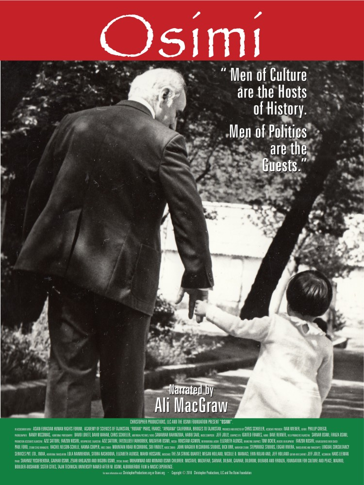

The worth of a person's thoughts is a measure of his or her own generosity.
On Generosity
1920 – 1996 • Khujand, Tajikistan
Scholar, Humanist, Science Organizer,
and Public Figure
Muhammad Osimi devoted his life to knowledge, education, culture, and the intellectual future of Tajikistan. A physicist by training and a philosopher by depth, he became one of the most important organizers of scientific and cultural life in Central Asia — building institutions, leading scholarship, and advancing dialogue across nations.
View Timeline →Muhammad Saifiddinovich Asimov · Osimi
Men of culture are the Hosts of History,
men of politics are the Guests.
— Muhammad Osimi
About
Born in Khujand in 1920, Muhammad Osimi lived through war, reconstruction, nation-building, and intellectual transformation. He served in World War II, became the first rector of the Tajik State Polytechnic Institute, held senior public leadership roles, and led the Academy of Sciences of Tajikistan for more than two decades.
His work crossed disciplines and borders — linking philosophy, science, education, history, and culture into one enduring legacy that belongs not only to Tajikistan, but to the wider history of science and civilisation.
Muhammad Saifiddinovich Asimov received his qualification as a physicist from the Physics and Mathematics Faculty of Uzbek State University (1937–1941). He served with distinction in the Second World War, receiving the Order of the Patriotic War (1st degree) and multiple military honours.
Returning home, he taught physics and led academic departments before pursuing graduate study in Moscow — where he defended his doctoral thesis on "Space and Time as Basic Forms of Matter Existence" (1952–1955), laying the philosophical ground for a lifetime of interdisciplinary inquiry.
In 1956 he was appointed the first rector of the Tajik State Polytechnic Institute, building it from the ground up. By 1965 he was elected President of the Academy of Sciences of Tajikistan, a role he would hold for twenty-three transformative years.
Through UNESCO, he led the publication of the six-volume History of Civilizations of Central Asia and participated in scholarly forums across more than thirty countries — from India and Japan to France, Cuba, and the United States.
Legacy at a Glance
Origin
1920
Born in Khujand, Tajikistan, on August 25th
Institution Building
1956
Appointed First Rector of the Tajik State Polytechnic Institute
Scientific Leadership
1965 – 1988
President of the Academy of Sciences of Tajikistan for 23 years
International Legacy
UNESCO
Leadership
Led the international publication of the History of Civilizations of Central Asia in 6 volumes
Thought & Scholarship
Muhammad Osimi's intellectual work ranged across philosophy of science, history of science, cultural heritage, and the study of Central Asian civilisation. He wrote, edited, translated, and led major scholarly efforts that helped preserve and interpret the intellectual heritage of the region.
Explore Works and IdeasFrom his writings
"The worth of a person's thoughts is a measure of his or her own generosity."
Muhammad Osimi
His books were published in Russian, English, German, Farsi, and Arabic. His major works include Matter and the Physical Picture of the World (1966), The Concept of Matter and the Problem of Physical Reality (1970), and the eight-volume Tajik Soviet Encyclopedia (1978).

2020 DocumentaryThe Film
A documentary about a life that changed a nation
Osimi chronicles the life of a man called the "Nelson Mandela" of Central Asia. With our world in turmoil through cultural and philosophical differences, the story of one man — in a country most could not locate on a map — changes the paradigm of how to create peace.
Through Muhammad Osimi we witness the power of art, education, and science to help heal his country even during a bloody civil war. The concepts that he lived for, fought for, and ultimately for which he died, will serve us all and continue to grow through his family, friends, and students.
In His Own Words
The worth of a person's thoughts is a measure of his or her own generosity.
On Generosity
Children must be respected and their self-worth should not be damaged.
On Parenting
Men of culture are the Hosts of History, men of politics are the Guests.
On History
Memory & Preservation
This website is part of an ongoing effort to preserve the life, thought, writings, and public memory of Muhammad Osimi for future generations. Through photographs, documents, publications, film, and historical materials, the archive seeks to keep his legacy accessible, studied, and alive.
Visit the ArchiveColor Palette